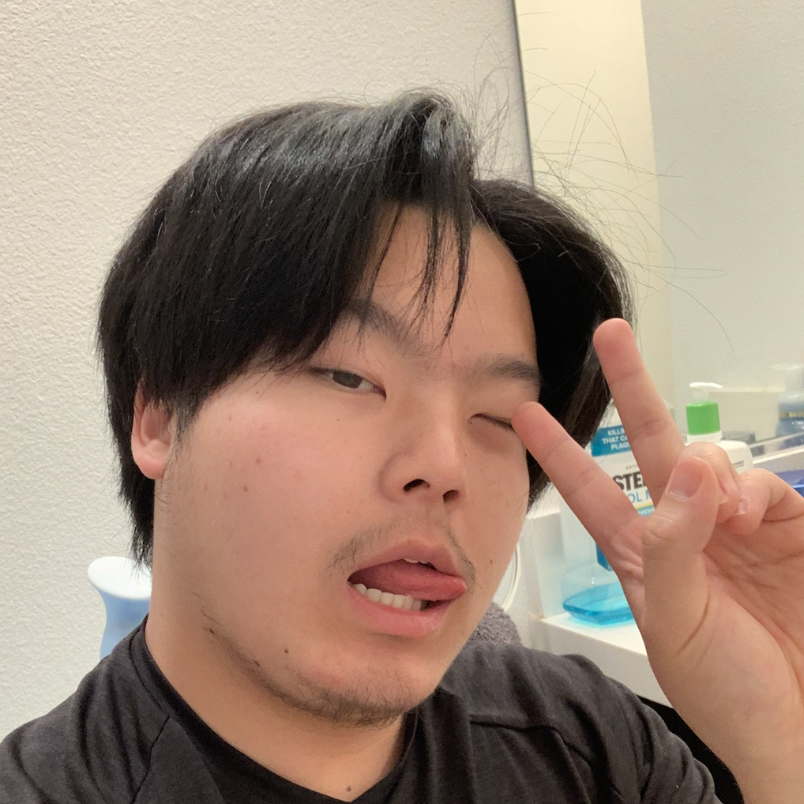

Brandon Kue

Summary:
I am a 4th year Computer Science Major at Sacramento State University who demonstrates a strong work ethic, organizational skills, and creativity. I am currently seeking to obtain experience in the field of Software Development.
Education:
Rio Linda High School, Rio Linda, CA
- GPA: 3.7
- Graduated: June 2020
University of California, Sacramento
- Major: Bachelors of Science in Computer Science
- Expected Graduation Date: Spring 2024
The Complete 2023 Web Development Bootcamp by Angela Yu
Work Experience:
T4 Arden
- Barista/Cook: July 2021-July 2022
Skills:
- Team Player / Leadership
- Good Communicational skills
- Creativity
- HTML: Intermediate
- CSS: Intermediate
- JAVASCRIPT: Intermediate
- JAVA: Intermediate
- LUA: Intermediate
Honorable Mentions:
Rio Linda High School Volleyball Team Captain / Assistant-Coach
Team Captain / Assistant-Coach
- Lead practices, warm-ups, and conditioning for boy's volleyball
- Helped coach Freshman, JV, and Varsity girl's volleyball
The Heights Dance Program
Volunteer
- Set and Clean Up Crew
- Cashier
Questions?
Contact Me